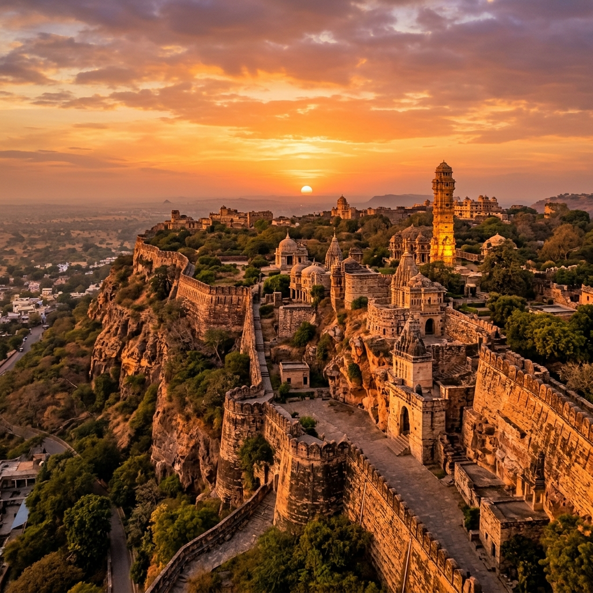
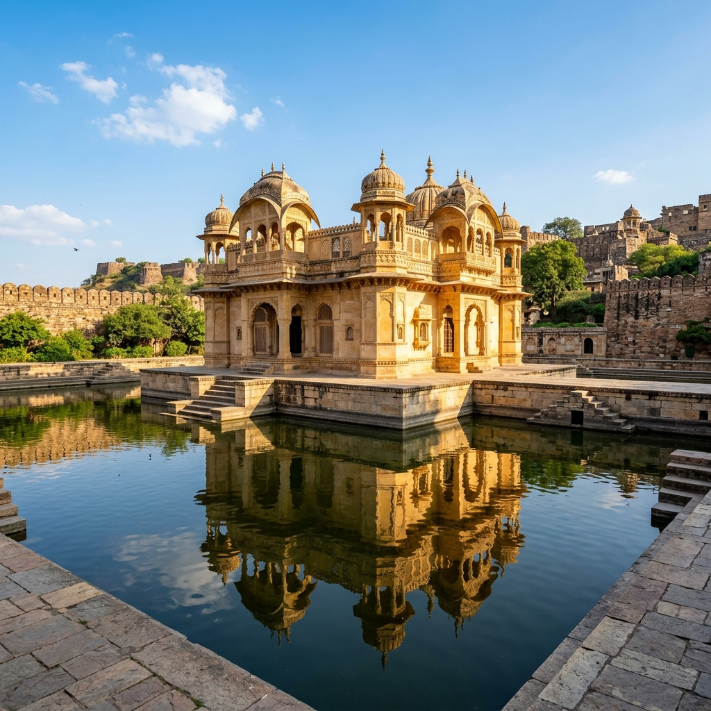
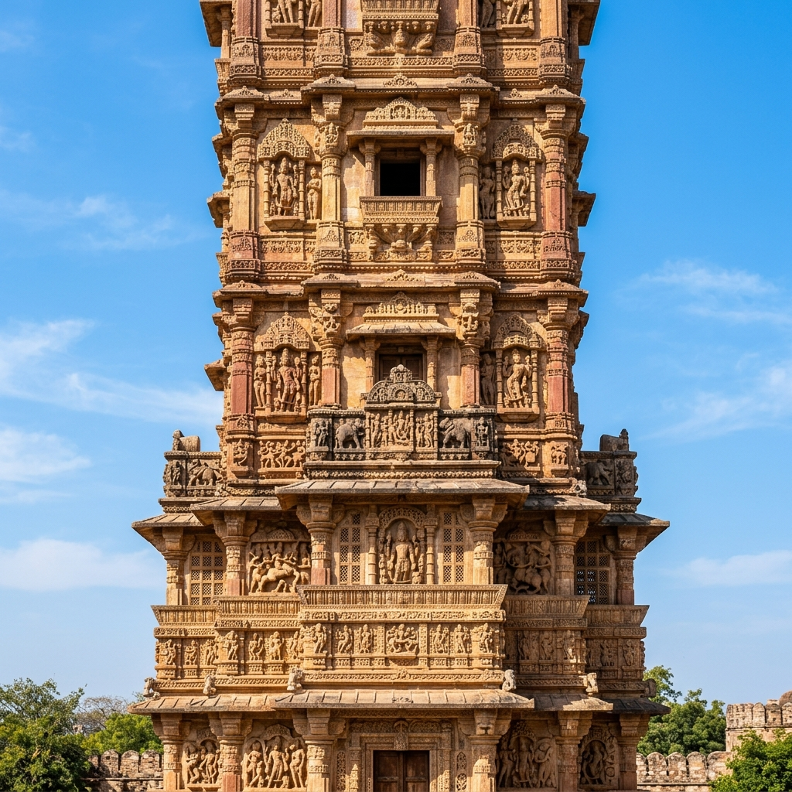

Siege of Chittor (1303) Explorer
Ascend the mighty ramparts of Mewar's golden fortress. Discover the epic siege where Delhi Sultan Alauddin Khalji clashed with Rawal Ratnasimha, culminating in the first Jauhar of Chittor and a legendary saga of Rajput sacrifice.
The Delhi Sultanate's Assault on the Fort on the Hill
In 1303 CE, Alauddin Khalji, the ambitious ruler of the Delhi Sultanate, marched south with a massive army to besiege Chittorgarh, the capital of the Guhila kingdom of Mewar. Strategically located on an isolated 500-foot-high rocky hill, Chittorgarh was an almost impregnable fortress that controlled the trade and military routes connecting Delhi with the wealthy ports of Gujarat and the Deccan.
Alauddin surrounded the hill, establishing a blockade that cut off all supplies. The siege dragged on for eight grueling months. Inside, Rawal Ratnasimha and his Rajput defenders held out valiantly, but by August, the fortress faced starvation, leading to the dramatic final resolution of the siege.
🏛️ At a Glance
- Combatants: Delhi Sultanate vs. Guhila Kingdom of Mewar.
- Duration: February – August 1303 (8 Months).
- Outcome: Sultanate victory; Chittorgarh captured.
- Historical Legacy: Marked the first Jauhar and Saka of Chittor.
Key Figures of the Conflict
The siege was defined by outstanding leaders who became central characters in Indian history and legend.
Alauddin Khalji
The military genius of the Delhi Sultanate. He sought to consolidate imperial power and capture Chittor to secure his lines of communication to the Deccan.
Rawal Ratnasimha
The Guhila ruler of Chittor. He led the stubborn Rajput defence of the fort and ultimately charged the Sultan's army in a fight to the death (Saka).
Rani Padmini
The Queen of Chittor, celebrated in Jayasi's epic poem *Padmavat*. She led the noble Rajput women into the Jauhar fire to protect their honor.
Gora & Badal
The legendary uncle-nephew warrior duo of Mewar, who led daring counter-raids and fell fighting heroically against the Sultanate's vanguard.
📈 Fall of the Fort
- August 1303: Food and water reserves in the fort are exhausted.
- Jauhar Sacrifice: Rani Padmini and Rajput women commit self-immolation.
- Saka Charge: Ratnasimha and his soldiers don saffron robes and charge the enemy.
- Khizrabad: Alauddin annexes Mewar and renames Chittor after his son, Khizr Khan.
The First Jauhar and Saka of Chittor
By late August, the fort's defeat was inevitable. The defenders refused to surrender. On the night of August 25, Rani Padmini and thousands of Rajput women committed *Jauhar*, walking into a massive funeral pyre to avoid captivity and dishonor. The following morning, Rawal Ratnasimha and his men performed *Saka*.
Dressing in saffron robes, the warriors threw open the gates of Chittorgarh and launched a desperate, suicidal charge into the Sultanate ranks, fighting until the last man fell. The Sultan's army captured a silent, smoke-filled fortress.
The Legend and the Historical Memory
The event transformed Chittor into an enduring symbol of Rajput honor and epic poetry.
Jayasi's Padmavat
Written in 1540 CE, the Awadhi epic poem *Padmavat* immortalized Rani Padmini's beauty and the Jauhar, blending history with legendary romance.
Sisodia Resurgence
Sultanate rule was short-lived. By 1326 CE, Hammir Singh of the Sisodia branch retook Chittorgarh, starting a golden era of Mewari power.
Symbols of Valour
The ruined gates, palaces, and cenotaphs of Chittorgarh Fort stand today as UNESCO World Heritage sites celebrating these sacrifices.
Chronology of the 1303 Siege
Follow the campaign events that marked the first fall of Chittor.
March from Delhi
Alauddin Khalji sets off with the imperial army, marching southward through Rajasthan.
The Siege Begins
Sultanate forces encircle the base of the hill, launching catapult payloads but failing to breach the gates.
The Jauhar of Chittor
Rani Padmini and the women of the fort sacrifice themselves in the sacred fire as supplies run out.
The Saka and Fall
Ratnasimha leads the final charge. Alauddin enters the fort, renaming it Khizrabad.
Sites of Chittorgarh Fortress
Explore the historic palaces, arches, and victory monuments inside the fort.

Chittorgarh Fort Walls
The formidable stone ramparts situated on the 500-foot-high rocky plateau.

Padmini Palace
The island-style stone palace located inside the fort complex.

Vijay Stambha
The carved stone monument celebrating the enduring spirit of Rajput Mewar.
📚 References & Further Reading
- Amir Khusrau (1303 CE). Khaza'in ul-Futuh (Treasures of Victory). Delhi Sultanate Chronicles.
- Jayasi, Malik Muhammad (1540 CE). Padmavat. Awadhi Epic Poetry.
- Thapar, Romila (2002). Early India: From the Origins to AD 1300. University of California Press.
- Tod, James (1829). Annals and Antiquities of Rajasthan. Smith, Elder & Co.